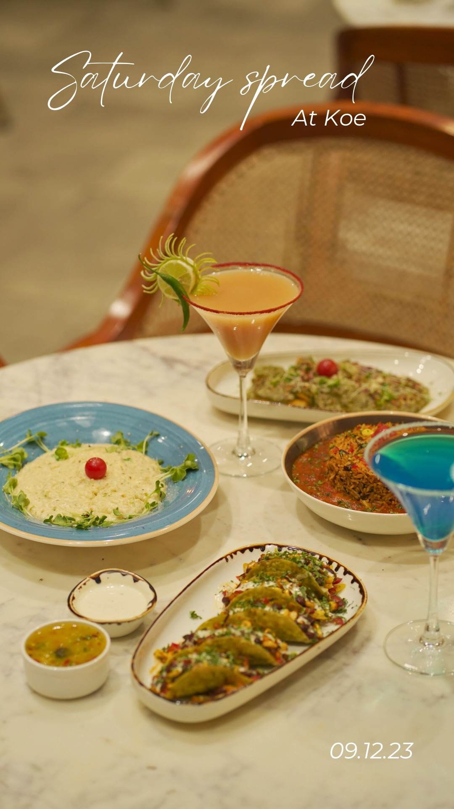

Welcome to Your Coffee Cafe, where passion for coffee meets a commitment to quality. Our journey began in [Year] when [Founder's Name] set out to create a place where coffee enthusiasts could experience the finest coffee blends in a warm and inviting atmosphere.
cheese and bread are what attract the crowd, and we are the only cafe providing the roasted beans. We believe in the art of coffee-making. Each cup is a result of carefully selected beans, precision brewing, and a dedication to delivering an exceptional coffee experience to our customers.
Coffee roasting is the process of heating green coffee beans to develop flavor, aroma, and color. It involves carefully controlling temperature and time to achieve desired roast levels, ranging from light to dark. The roasted beans undergo chemical changes, producing the distinctive taste and fragrance associated with different coffee varieties. During roasting, beans go through various stages: drying, first crack (audible when beans expand), and, if desired, a second crack. Roasters use different methods like air roasting or drum roasting, each influencing the final flavor profile. Factors such as bean origin, altitude, and processing also impact the roasting outcome, resulting in a diverse spectrum of coffee flavors appreciated by enthusiasts. A coffee workshop typically involves hands-on sessions or demonstrations where participants learn about coffee cultivation, processing, brewing techniques, and tasting. Experts guide attendees through the nuances of selecting beans, roasting, and various brewing methods. Participants often gain insights into the sensory aspects of coffee, enhancing their appreciation for the diverse world of coffee flavors. Workshops can cater to both beginners and enthusiasts, fostering a deeper understanding of the coffee journey from bean to cup.